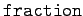
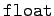
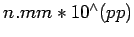
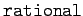
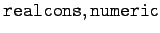

Maple kennt die in der folgenden Tabelle aufgeführten Grundtypen von Zahlen.
Tabelle Zahlenarten in
Maple
| Zahlenart |
Typ |
Darstellungsform |
| Ganze Zahl |
 |
nnnnnn Kette beliebig vieler Ziffern |
| Bruchzahlen |
 |
ppp/qqq Bruch zweier ganzer Zahlen |
| Gleitpunktzahlen |
 |
nn.mmm oder in wissenschaftlicher Notation  |
Mit Hilfe der Typprüfungsfunktionen können weitere Eigenschaften von Zahlen erfragt werden:
- 1. Rationale Zahlen (Typ ):
- Rationale Zahlen sind in Maple die ganzen Zahlen und die Brüche, wobei ein Bruch, der zur ganzen Zahl vereinfacht werden kann, von Maple nicht als Bruch (Typ ) erkannt wird.
- 2. Gleitpunktzahlen (Typ ):
- Setzt man hinter eine ganze Zahl den Dezimalpunkt (nnn.), so wird sie automatisch als Gleitpunktzahl interpretiert.
- 3. Gemeinsamkeiten:
- Alle drei Zahlenarten haben die Typen  und . Die letzten beiden Typen treffen auch für komplexe Zahlen zu.
- 4. Komplexe Zahlen:
- Komplexe Zahlen werden mit der imaginären Einheit I wie üblich gebildet. Die Zahl I repräsentiert die Quadratwurzel aus -1. Sie ist vom Typ complex. Ihre Definition lautet intern
Für die Darstellung komplexer Zahlen existiert intern der Complex-Konstruktor:
liefert, wenn x und y Zahlen sind, x+yI.